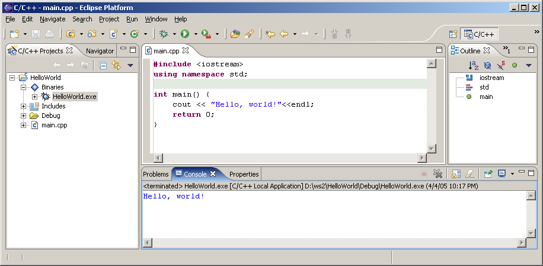

| Setting up Eclipse | ||
|---|---|---|
|
|
||
| Setting up a compiler | Common Problems | |
On Windows XP and later, this may be a good point in time to create a system restore point. This may safe you trouble in the long run if the installation fails.
Eclipse was originally written for the Java platform. It still requires a Java Runtime Environment (JRE) or a Java Development Kit (JDK), version 1.5 or greater. You will most probably already have Java installed (it comes included in Mac OS X until 10.6 and will be auto-installed in Mac OS X 10.7 / Lion). However, if you don't have Java installed, and you are on Windows or Linux, you can download a JRE from Sun's Java website or from java.com. At the time of this writing the latest version was Java Runtime Environment (JRE) 7. Look for the section called "Java SE Runtime Environment (JRE)" and select "JRE 7" (or similar). You will not need NetBeans, JDK, or EE, they are just larger downloads with more programs. You may need the JDK if you want to do Java development.
Note: There may be an incompatibility between Eclipse Helios and Java 1.6 update 21.
To find out if you have Java installed, and which version it is, you can open a command prompt / shell and type in:
java -version
Eclipse is a modular software, but ever summer there are bundled released. The link is:
I recommend the complete "Eclipse IDE for C/C++ Developers" bundle, which already contains the CDT. If you download a different bundle, you will probably have to install the CDT manually, as described in Installing the CDT.
The file is about 86 MB in size, so it will take a while to download. You will end up with a .ZIP file. Use either
FilZip or your favorite ZIP Program (Windows XP/Vista/7 and Mac OS X have .ZIP support build in) to unpack the file. Move the unpacked folder to any location, for example C:\Program Files\eclipse. You can now start Eclipse by double-clicking it.

However you installed eclipse, you should now be able to run it. Double-click the icon or start the appropriate script in UNIX and Eclipse's splash-screen will appear:

Immediately after that Eclipse will ask you for your workspace location. It defaults to a place within your personal settings. It is a good idea to use the default workspace, you may want to note where it is located.

If you always want to use the same workspace, you may select the Use this as the default... and you'll never have to worry about workspaces again. This is usually a good idea once you've used Eclipse for a while. Finally Eclipse starts up with the welcome screen:

And if you select the "Go to the workbench" (the backward arrow) on the right, then you are inside Eclipse.
If you downloaded the "Eclipse IDE for C/C++ Developers" you can skip the next section and go straight to Configuring the CDT.
If you have downloaded a different package, there are additional tools needed to start programming. We want to develop in C++, so we will continue with the next section.
This is only required if you did not download the CDT version as described above. Please check if you are able to create a new C++ project (as described in Hello, World!) before going through this section!
This section described the current (3.5, 3.6, and 3.7) version of Eclipse. For the previous version (3.4) Please see Installing the CDT).

This will show you the list of available software update sites. CDT is part of the standard release, so you can select an update site matching your eclipse version.
Please note: It is important to install the right Version of CDT for your version of eclipse:
http://download.eclipse.org/tools/cdt/releases/indigo
http://download.eclipse.org/tools/cdt/releases/helios
http://download.eclipse.org/tools/cdt/releases/galileo

When you have found the CDT site, it will give you two entries: CDT Main Features and CDT Optional Features. Expand both, and find the latest version of the CDT. Make sure you select at least the following:
Do not select all items! Some of these require dependencies from other projects, which may not be installed and thus fail to install. Select only the features you need!

The select "Next..."
You will have to confirm the selection with "Next".
And accept the license agreement with "Finish".
Downloading and installing will take a while. Once its done it will ask you to restart Eclipse. This is a good idea, so select "Yes".

Once Eclipse has restarted you may need to configure it for your computer.
Fortunately, this is very easy. If your path is set correctly, there should be absolutely nothing you need to configure. This is true if you followed these instructions for Windows or Mac OS X.
On some Unix systems you might have to change your "make" program to "gmake". You will find the setting in Window / Preferences (Eclipse / Preferences on Mac OS X). Then expand "C / C++", then "New CDT Project Wizard", "Makefile Project" and select "Builder Settings". In the section "builder", de-select "use default build command" and for "Build command" enter "gmake".
Once you are in Eclipse, you are given an empty workspace. You now have to start a new project. To do so, select "File" / "New" / "Project...". Expand the section "C++" and select "C++ Project", then click "Next >".
On the next screen, you have to give your project a name. In this case, it will be "HelloWorld", however, you may use any name you like. Also, you have to select a toolchain.
Click "Next".
The next screen contains some Basic settings. Fill in what you like:

In the last setting you can chose output formats, it is always good to have a release and a debug configuration. Click "Finish".

Eclipse will now generate a few things, and then ask you if you want to switch to the C/C++ Perspective. This is a good idea, so say yes.

Great. You have a project now, and it does contain some sample code! You will immediately get an editor window for your project. Eclipse will also auto-build your project every time you save.
If eclipse does not auto-build, you have to turn on "build automatically" in the Project Menu, or click the "Build All" button after every change.


Now here comes the tricky part: On the left pane, select "C/C++ Projects", expand "Binaries" and you should see and executable (HelloWorld.exe on Windows). Now right-click that executable, and select "Run" / "Run Local C/C++ Application". If everything goes well your output will be in the bottom right window in the "Console" tab and it should say "Hello, World".

Congratulations! You have successfully installed a compiler, a build system and an IDE. You have successfully created, edited, compiled and run a project. You should now be able to start your own projects!
|
|

|
|
| Setting up a compiler | Common Problems |